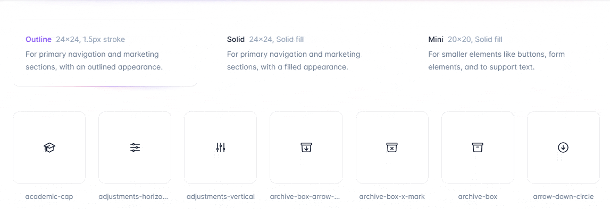
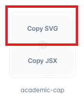
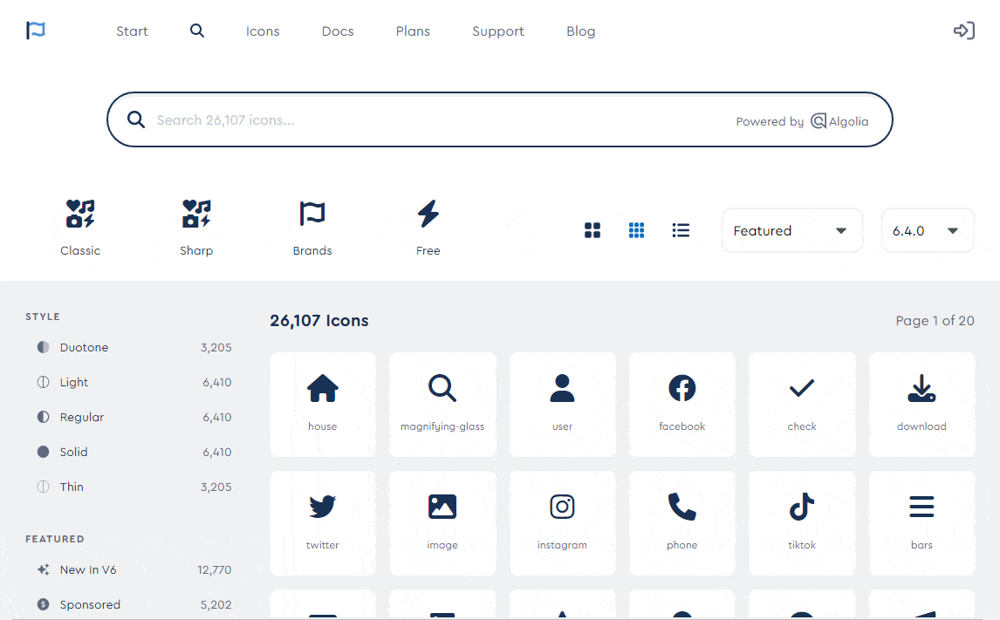

If you've used popular icon sets before, such as Font Awesome or Material Icons, you've probably used a simplified version where we include a link to the entire icon set, and then use these icons in our HTML in the form of defined classes, such as:
And a heart appears in your project:
However, for performance reasons, Tailwind CSS recommends using icons as SVG elements.
In this lesson, we'll find out exactly how it works.
Using icons in the SVG form has one great advantage - instead of loading the entire (sometimes really huge) set of icons to our project, we can add only the icons we choose (even just one), which of course can have a significant impact on the weight of our project and its performance.
SVG stands for Scalable Vector Graphics, which means these icons will maintain their quality regardless of the display size.
Problem? This looks gross in our HTML because we need to include some really big SVG code.
Same heart icon as above, but added as an SVG element.
However, controlled HTML clutter is something that is acceptable in Tailwind.
How does it exactly work? Let's find out.
The simplest solution is to use the recommended icon set created by one of Tailwind's creators.
This set is Hero Icons.
The advantage is that these icons already have Tailwind CSS classes added, which allows you to easily add them to our project and they work right away.
The disadvantage is that this set is relatively small (only 292 icons), which means that you often have to look for the icons you need in other sources.
Firstly click on the button below and go to the Hero Icons page.
Hero Icons You will see a list of icons and 3 options to choose from - Outline, Solid and Mini icons. When you select an option, the icons will be filtered.
Once you've selected an icon, hover over it and click the "Copy SVG" button. The needed code will be copied to the clipboard.
Suppose we copied the academic cap icon.
After adding it to our project, we should see a cap like this:
It works out of the box, but let's have a closer look at this.
The outer svg element defines the SVG element. The
xmlns attribute is used to specify the XML namespace for the
SVG (which is a requirement for SVGs to work properly). The
viewBox attribute is used to specify the aspect ratio and
coordinate system of the SVG. The fill attribute is set to
"currentColor", meaning the color of the shapes inside the SVG will inherit
the color of the text in the same context.
The class attribute contains Tailwind CSS utility classes to
style the SVG. The .w-6 and .h-6 classes set the
width and height of the SVG to 1.5rem (24px).
The path elements contain the actual drawing instructions for
the icon. Each path represents a different part of the icon. The
d attribute in each path element holds these commands.
Another icon set that has SVG icons available is Font Awesome.
This is one of the most popular (if not the most popular) icon sets. It has a free and paid version.
There are over 2000 icons in the free version, which is many times more than in Hero Icons.
The disadvantage is that when using icons in SVG form, we also need to add a comment about the license.
Firstly click on the button below and go to the Font Awesome page.
Font AwesomeThen select the "Free" option (Unless you have purchased a paid license. In my opinion, a free license is more than enough).
Then click on the icon you are interested in and select the SVG option. Then click on the code to copy it. It will be kept in the clipboard.
Suppose we have copied the house icon.
When we copy it to our project, we will see that it is huge and fills all available space.
This is because there is no defined size by default. So we need to add
Tailwind classes to define height and width.
So let's use the same classes that Hero Icons have by default. Add the
.w-6 and .h-6 classes to the
svg element.
A cute little house should then appear in our project.
Note: You can also try our SVG icon generator with font awesome prepared icons already with Tailwind CSS classes.